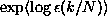
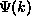
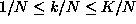
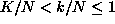
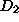
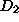

Another way of attaching weight to  -balls, which is more natural, is
the probability itself. The resulting scaling exponent is called the
information dimension . Since the Kaplan-Yorke dimension of
Sec.
-balls, which is more natural, is
the probability itself. The resulting scaling exponent is called the
information dimension . Since the Kaplan-Yorke dimension of
Sec. is an approximation of , the computation of
through scaling properties is a relevant cross-check for highly deterministic
data. can be computed from a modified correlation sum, where, however,
unpleasant systematic errors occur. The fixed mass
approach [81] circumvents these problems, so that, including
finite sample corrections [77], a rather robust estimator
exists. Instead of counting the number of points in a ball one asks here for
the diameter
is an approximation of , the computation of
through scaling properties is a relevant cross-check for highly deterministic
data. can be computed from a modified correlation sum, where, however,
unpleasant systematic errors occur. The fixed mass
approach [81] circumvents these problems, so that, including
finite sample corrections [77], a rather robust estimator
exists. Instead of counting the number of points in a ball one asks here for
the diameter  which a ball must have to contain a certain number k
of points when a time series of length N is given. Its scaling with k and
N yields the dimension in the limit of small length scales by
which a ball must have to contain a certain number k
of points when a time series of length N is given. Its scaling with k and
N yields the dimension in the limit of small length scales by
The routine c1 computes the (geometric) mean length scale
 for which k neighbors are found in N data
points, as a function of k/N. Unlike the correlation sum, finite sample
corrections are necessary if k is small [77]. Essentially, the
of k has to be replaced by the digamma function . The
resulting expression is implemented in c1. Given m and , the
routine varies k and N such that the largest reasonable range of k/N is
covered with moderate computational effort. This means that for  (default: K=100), all N available points are searched for neighbors
and k is varied. For , k=K is kept fixed and N is
decreased. The result for the NMR laser data is shown in
Fig.  (d), where a nice scaling with
(d), where a nice scaling with  can
be discerned. For comparability, the logarithmic derivative of k/N is plotted
versus
can
be discerned. For comparability, the logarithmic derivative of k/N is plotted
versus  and not vice versa, although k/N
is the independent variable. One easily detects again the violations of
scaling discussed before: Cut-off on the large scales, noise on small scales,
fluctuations on even smaller scales, and a scaling range in between. In this
example, is close to , and multifractality cannot be established
positively.
and not vice versa, although k/N
is the independent variable. One easily detects again the violations of
scaling discussed before: Cut-off on the large scales, noise on small scales,
fluctuations on even smaller scales, and a scaling range in between. In this
example, is close to , and multifractality cannot be established
positively.